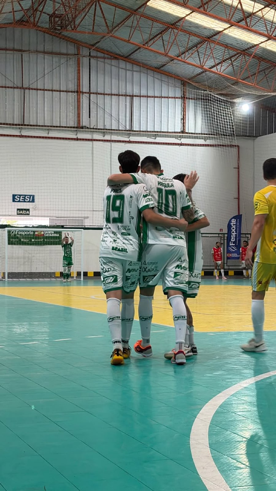

A Chapecoense Futsal, representando Chapecó, goleou o São Ludgero por 7 a 1 na tarde desta quarta-feira (25), em Rio do Sul, e garantiu vaga nas quartas de final dos Jogos Abertos de Santa Catarina (JASC) 2026. O confronto marcou o encerramento da fase de grupos da competição.
Com amplo domínio da partida, o Verdão das Quadras construiu o placar com gols de Lucas, duas vezes, João Seco, também duas vezes, Tutu, Kassula e Davi. A atuação consistente refletiu a evolução da equipe ao longo da primeira fase.

Com o resultado, a Chape Futsal chegou a sete pontos e encerrou a etapa de grupos invicta, com duas vitórias e um empate, na liderança do Grupo C. Nas quartas de final, o adversário será o Itajaí, segundo colocado do Grupo B. A partida será nesta quinta-feira (26), às 15h, na Arena Cícero Paranhos, em Rio do Sul.
Em caso de classificação, o Verdão das Quadras enfrenta na semifinal o vencedor do duelo entre Tubarão e Jaraguá do Sul.
Crédito das fotos: Prefeitura de Chapecó